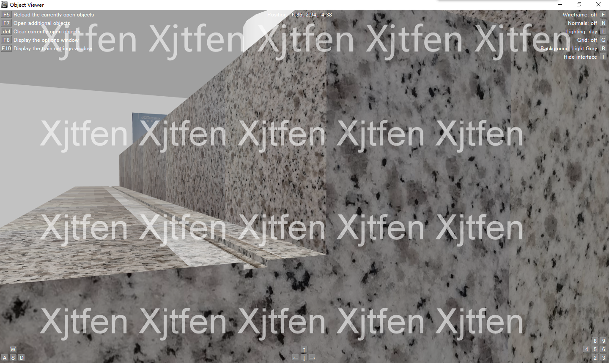
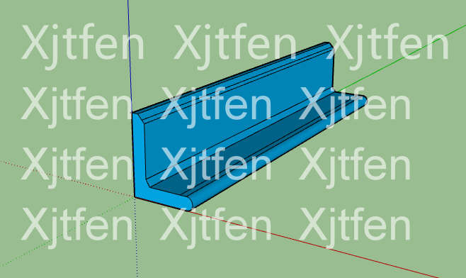
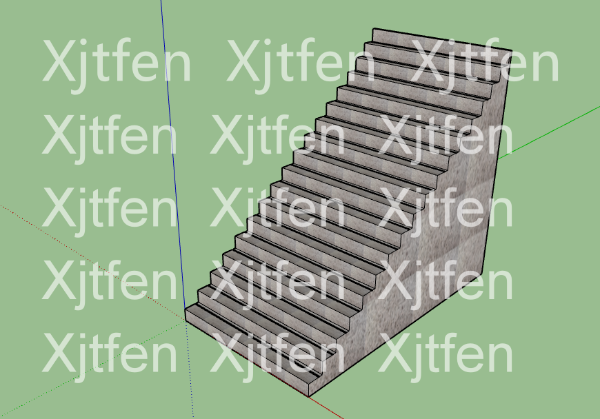
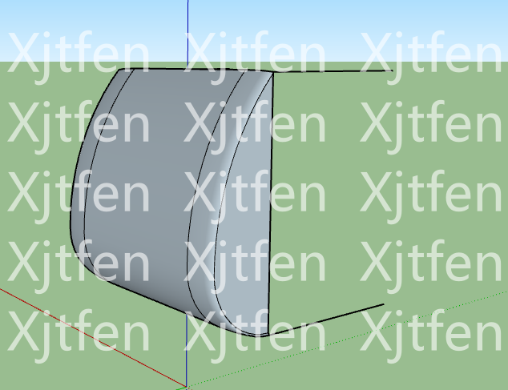
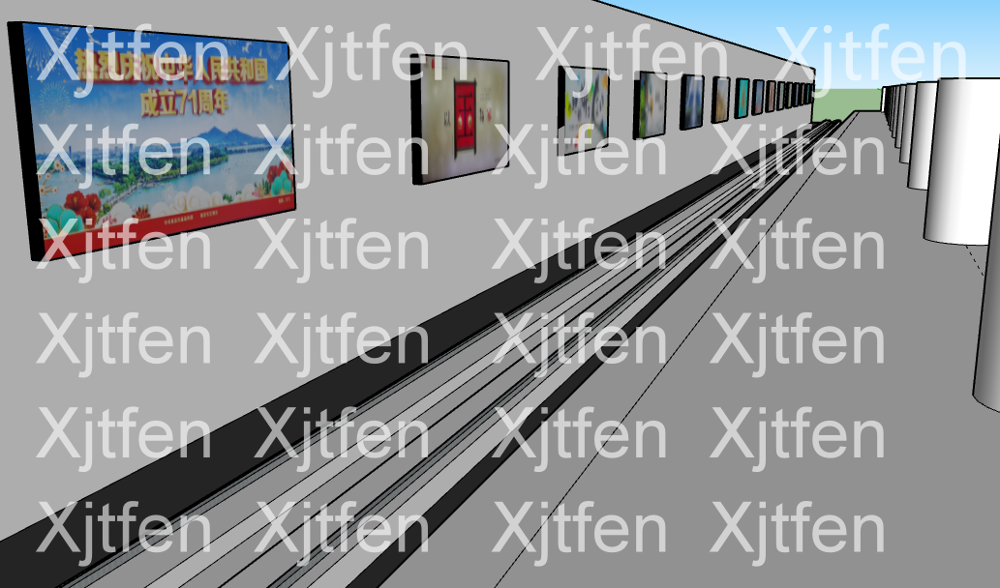

这有点类似于一个简易博客。GitHub可以进行即时上传，我便在此进行制作进度的展示。
这里是唯一的进度展示区，悄悄地来，再悄悄地去......不将制作进度放在主流社交平台上，也是为了不引人注意。
网站编写技术欠缺，效果不佳，敬请原谅。
将以颠倒顺序发布博客，方便您查看最新进度。满十五条博客将安排使用编页的方式进行存储之前发布的博客。您可以点击下方的页码进行跳转。
今天啥也没干（逃）
好吧我更新了一下网站...给页面换了一个特别猛男的颜色...
这会让您有更好的浏览体验:)（逃again~）
周末悄悄地做了半个小时...虽然没啥好的可以发（手动捂脸）
做游戏当然要认真做细节啦↓
不过我还是屑到家了......
今天也许是这个暑假最后一天去制作了。从明天开始，学校要求在家进行最后的学习，9.9开学......加上家教比较严，估计不太能碰电脑了，因此平日的进度或将慢到龟速甚至停止，非常抱歉。今天中午把车站给封了个顶，将楼梯、大字壁和电梯加到了车站模型里。但是忘记截图了（手动捂脸）所以很抱歉，不能给大家看到了......不过我会一直坚持做下去哒~
"Tomorrow is a new day."加油，明天会更好！一起努力，共创未来！共创资源（逃）
今天悄悄地发动态咯~废话不多说，直接上图~
   椅子、楼梯、车头、车站主体结构都已经差不多啦~（虽然屏蔽门还没做）
电扶梯也在做，只是太丑，不忍直视，先不发出来了......
感谢广东深圳-N Q S（捷生）指导建设车头！
我在GitHub上发布的第一条简易博客。
© 2021 Xjtfen All Rights Reserved.
您所在地区时间：
页面上线日期：2021.9.1
网站制作：Xjtfen